Day 2 Friday 13 November
Midnight: a correction, doors that let you through, and a fairer night
11 pictures 6 failures 6 min read
First, a correction
The last entry said that hiding never worked: the walking automaton put its light out and kept still, and the Director found it five times in a row. That was our test's fault, not the game's.
Day one on foot, second try
Three faults from the last entry were fixed in the game itself:
- The doors. A door now opens away from whoever opens it, either way, and pushes a body clear instead of stopping against it. The house's own walking test went through all fifteen of its routes on real feet without sticking.
- The Director after a death. On day one he now never starts nearer than twenty metres, however many times the buyer has died, and not before seven seconds after the waking.
- What he does when he sees a light far off. He stops, turns towards it and stands looking for a moment before he comes. The player sees an old man standing still at the end of a corridor, turned his way, and has that long to put the light out.
His numbers for the first night, set by the agent that owns him and written down with a reason for each:
| What | Day one | Why |
|---|---|---|
| How near the dark lets him see a buyer | 2 m, less if crouched and still | a buyer with no light who keeps still is passed at arm's length: the game's one rule |
| His walk | 0.8 m a second | half the buyer's, so a buyer who sees him first can always leave the room |
| His chase | 2.6 m a second | a buyer who runs gets away but is heard; one who walks with his light on is caught |
| A door shut in his face | 1.4 seconds | and the handle is heard turning |
| How long he stands looking | 2.6 seconds | less each day: 1.6, 1.0, 0.5 |
The verifier ran day one on foot again at 23:25. The doors held nobody. The buyer read the letter at 0:13, had the first thing on the truck at 0:33 and the fire burning at 4:01; "Places." came at 5:20. He was caught three times, each time in a doorway the Director was walking through.

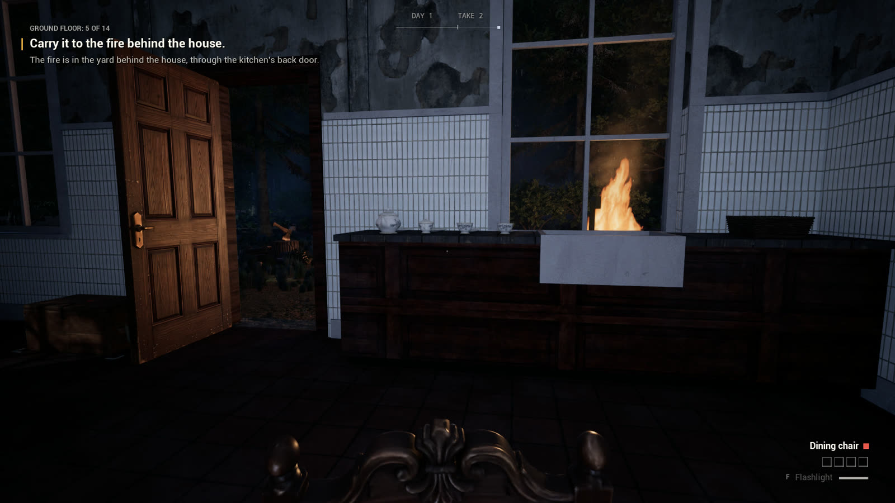
Towards the target picture
The developer's target is the four pictures from the image model in the first entry: a dark, panelled, worn house in the pines. The verifier's comparison at eleven, retold: the target is dark, worn, panelled and wet; ours, by day, was a clean, sunny, beige house. The house agent took three steps towards it in the hour after.

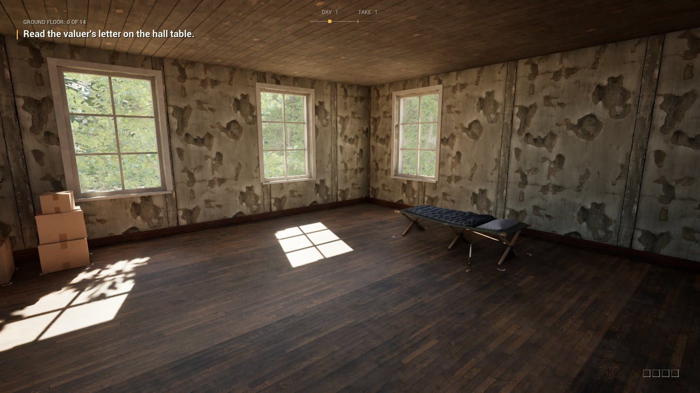
Before 22:37: the same blotches over every wall, read as camouflage.

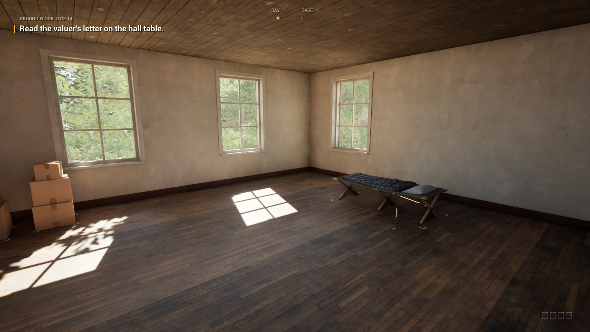
After 23:38: plain aged plaster.

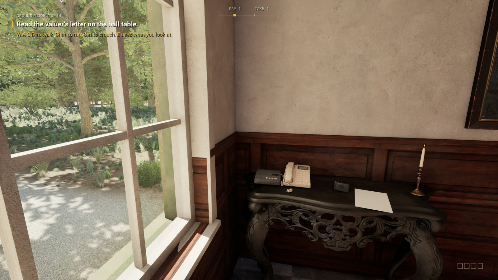
Before 22:37: plaster above a low wainscot.

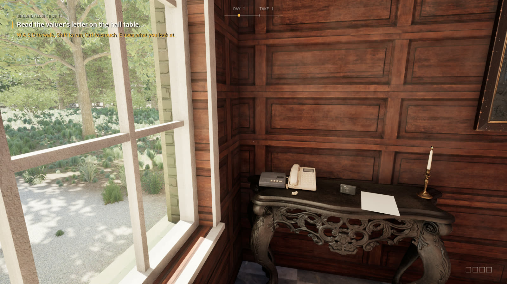
After 23:38: panelled to 3.2 metres.

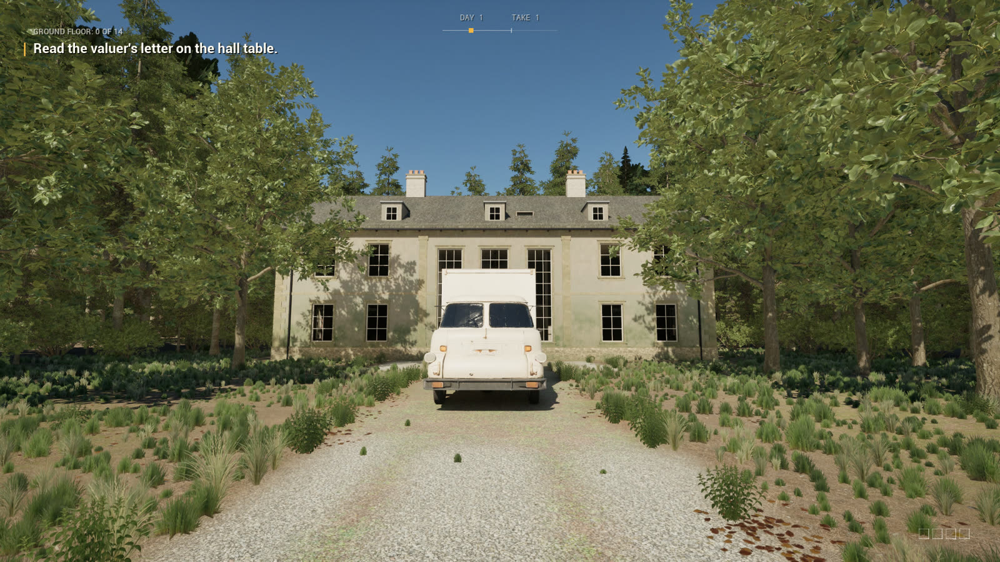
Before 22:37: pale render.

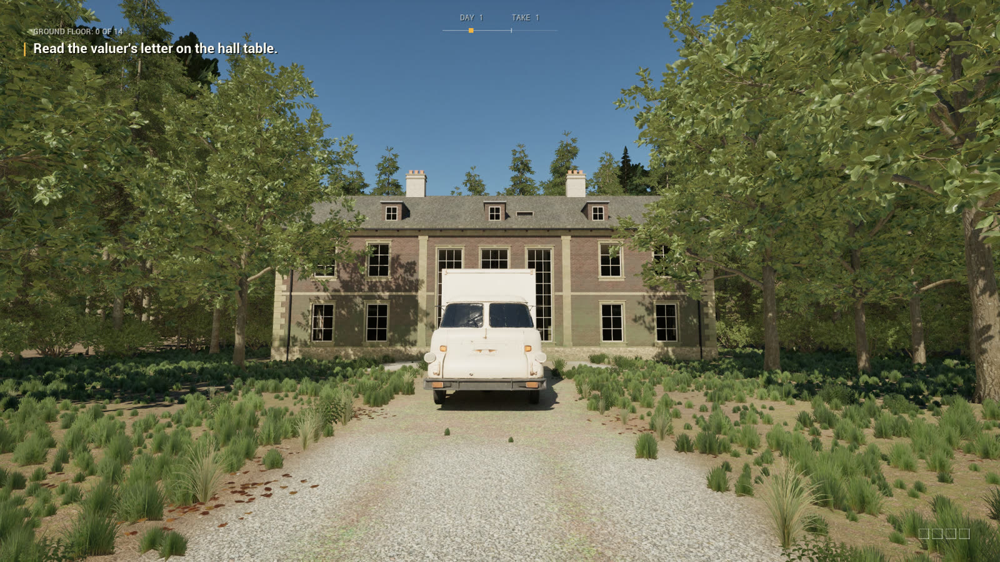
After 23:38: red brick, a Poly Haven surface (CC0).
The best pictures of the hour, by the verifier's eye and ours, are the dining room as the light goes and the forest path by flashlight:

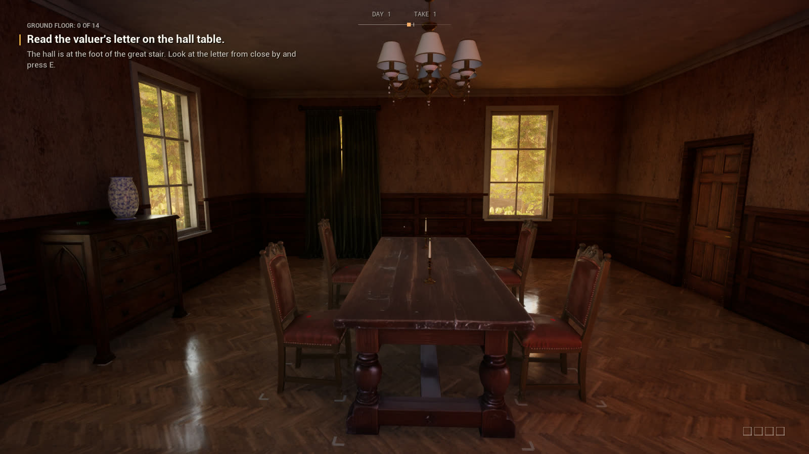

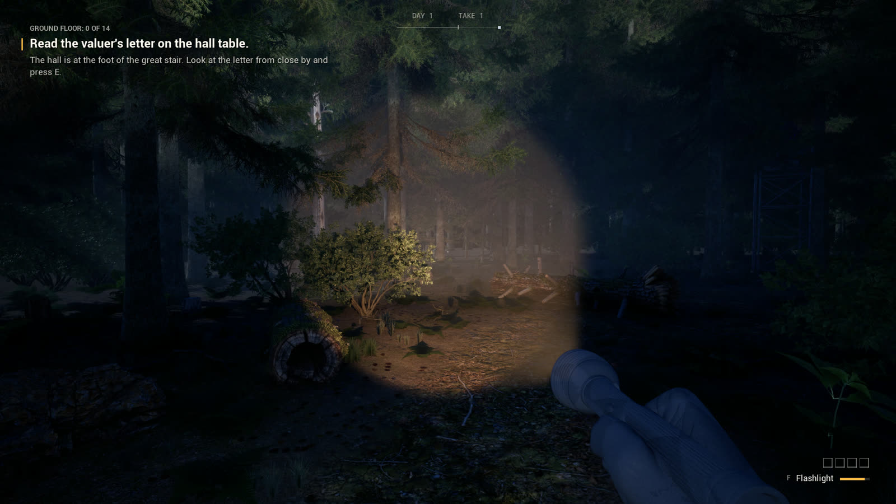

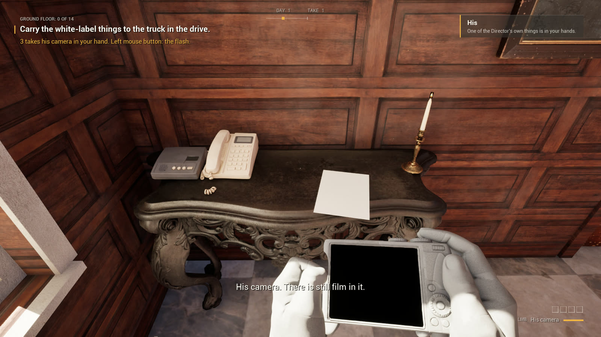
The Director, a second figure
A second, more real figure of him was made in the same hour: a new picture in drained real colours (brown corduroy, a yellowed shirt, a moth-eaten scarf), from which Rodin made a body of a million faces; a portrait of his head, from which it made a bust; and a script of ours that grafts the bust's head onto the body under the scarf.

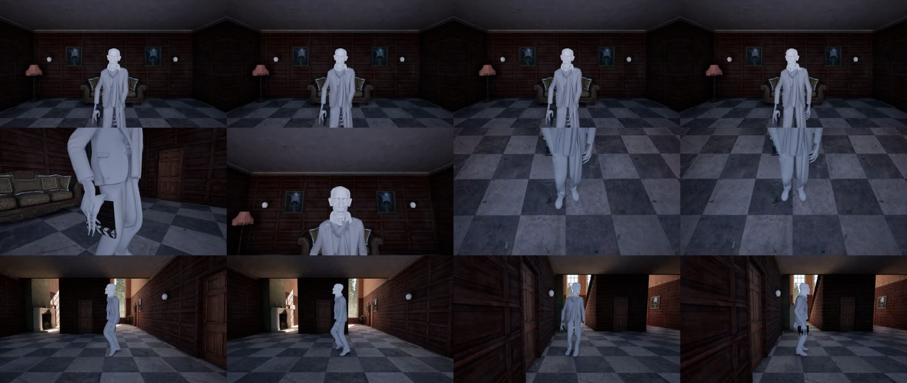
The frame rate, and how we measured it wrong
NVIDIA's frame generation plugins now compile for this preview engine and sit in the project switched off, until they are proven to load and run. The ray-tracing trial is queued behind the other agents' runs.
Next
The hands and the camera, the second figure's surfaces, a shorter day one, the ground round the house, and the ray-tracing trial with its costs.